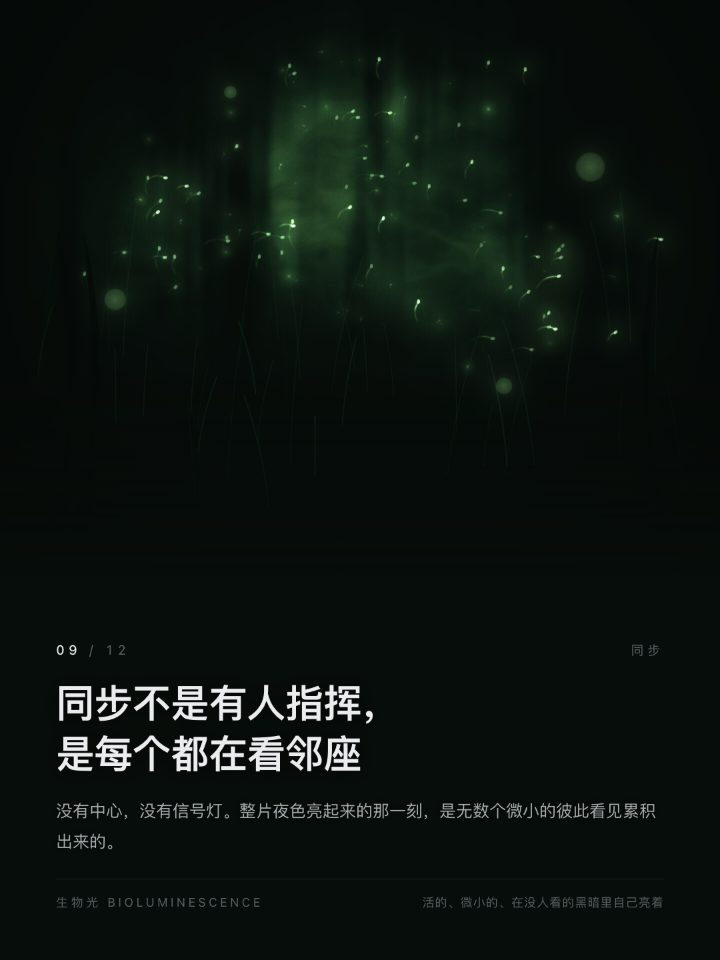
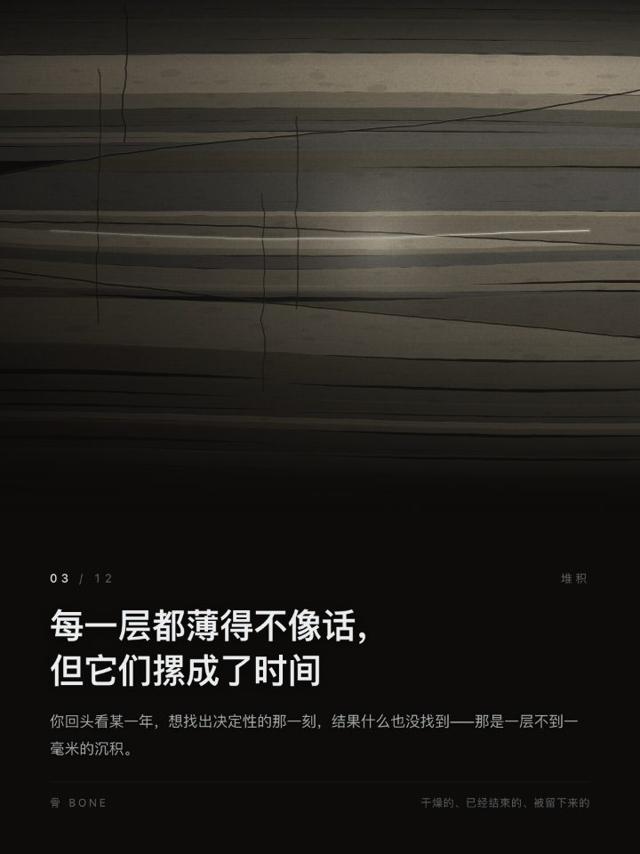

为什么不用生图模型
这不是将就，是整套东西的前提。
-
画面是程序，不是事实
改一个参数就能看它怎么变。生出来的图是一个既定事实，改不动。
-
判断句必须精确到字
交给图像模型，它会写错别字、会加装饰、会被光泽带走。
-
同一句话要能反复出片
换十几套配色、十几个意象，而版式一丝不变——这才是模板。
判断标准只有一个
读完字再看图，图会多出一层意思。 如果一张星空换成一张海浪而这句话照样成立，那星空就是多余的—— 那是装饰，不是表达。
一张卡上有什么

- 画面
--theme决定谁在动、怎么动。它是这句话的机制，不是背景。- 页眉
- 序号
--index / --total，以及机制名--kicker（默认空，要自己传）。 - 标题
--title：一句判断。整套东西围绕它，不围绕图。- 正文
--summary：这句话凭什么成立。写的是理由，不是抒情。- 页脚
- 配色名与它的情绪词（
--footer可覆盖）。配色决定温度，不决定形状。
怎么选主题：不要问「好不好看」，要问「怎么发生的」
最容易犯的错是按题材匹配——讲星星的文案配星野，讲水的配潮汐。那是表面的。
每个主题的 connects 记的不是"它画的是什么"，而是它演示了连接的哪一种机制。
我一直没注意到的那条线
机制是注视
星野
量变到某个点突然通了
机制是击穿
放电
成分没变，变的是它们的排列
机制是结晶
晶格
全部十八种机制（写新主题时，机制必须与它们都不同）
| 机制 | 主题 | 机制 | 主题 |
|---|---|---|---|
| 约束 | 光纤 fiber | 磁场 | 极光 aurora |
| 共振 | 共鸣 resonance | 折射 | 棱镜 prism |
| 共生 | 双星 orbit | 扩散 | 水中墨 ink |
| 延迟 | 回响 echo | 堆积 | 沉积 strata |
| 击穿 | 放电 discharge | 周期 | 潮汐 tide |
| 引力 | 星云 nebula | 累积 | 潮痕 tideline |
| 轴心 | 星轨 startrails | 激发 | 突触 synapse |
| 注视 | 星野 starfield | 交换 | 菌丝 mycelium |
| 结晶 | 晶格 lattice | 同步 | 萤火 fireflies |
配色的选法同理，但选的是温度：同一句判断放在「深空」里是冷静观察， 放在「余烬」里是警告，放在「琥珀」里是隔着一层时间的怀旧。
画廊
同一套版式，十八个机制、十八组配色各自组合。下面是十二张，每张下方的文字是它的机制与配色。
完整成品见仓库里的四套 deck：nexus / nexus-mono /
undertow / structure，每套 8–10 张，是能直接翻的成品，
不需要自己跑一遍。
- 18
- 主题 · 每个一种机制
- 18
- 配色 · 每组一种温度
- 4
- 排好的 deck
- 11
- 命令行工具
- 0
- 生图模型
怎么用
它是给 agent 用的 skill：拷进技能目录，agent 就能按文档自己选主题、自己出片。
1 · 装成 skill
git clone https://github.com/AidenNovak/insight-cards
cd insight-cards && Tools/install-skill.sh
# 装到 ~/.dimcode/v2/skills/insight-cards装完 agent 读 SKILL.md 就能用；--check 只检查不写入。
2 · 出一张
node bin/make-card.mjs \
--theme starfield --palette deep-field \
--title "你不是在收集碎片，你在连一个只有你能看见的形状" \
--summary "几百条记录躺在那里的时候什么都不是……" \
--out out/card.png1080×1440 @2x，单张渲染 1–3 秒。
3 · 出一套 / 翻一翻
node bin/make-deck.mjs --preset nexus --out out/nexus
node bin/gallery.mjs # 一个页面看全部成品
node Tools/thumb-sheet.mjs starfield orbit echo最后那条把卡片真的缩到 200px 并排——信息流里它就是那么大。
适合什么，不适合什么
适合：判断卡 / 金句卡 / 分享图 / 复盘，一次出一整套统一风格的 deck。 不适合：要真实照片的写实效果（那该用生图）；要可编辑的矢量文件（这里输出 PNG）。
它被怎么验过
这套东西不靠"看着挺好"，每一轮验收都留下了能复现的读数与失败记录。
-
冷启动试用
把六条未整理的原始笔记和这份文档交给一个完全没有上下文的 agent， 看它能不能学会"按机制配对"。它没有按题材表面相似去选，暴露出的七处问题都已修。
-
四轮核验，每条都记了反例
第三轮发现自检清单里"缩到 200px 仍认得出主体"这条从写下那天起就没被执行过—— 真的走一遍，18 个主题里有 3 个塌掉（`orbit` 只剩两个点、`echo` 只剩一团光斑、`fireflies` 只剩一堆散点）， 根因都是按画布比例缩放的尺寸在小尺寸下归零。
-
判据先证明它会失败，再相信它会通过
同轮里发现上一轮加的"局部写死颜色"判据是假的：把主体写死成纯红它仍然全绿。 换成量亮部整体色相后才成立（正常主题移动 151°–167°，写死掉到 8.6°）。
-
第四轮：一条主题真的过线了
fireflies的主题词是"同步"，可静帧在 200px 下只读成"一堆冷色微粒"。 先把光点脉动试了三档（群落亮度差 5.27 → 5.53，没用）， 最后是让雾层按群落相位呼吸：5.27 → 10.89，缩略图里读成"雾中萤火"， 而全尺寸没有变差。